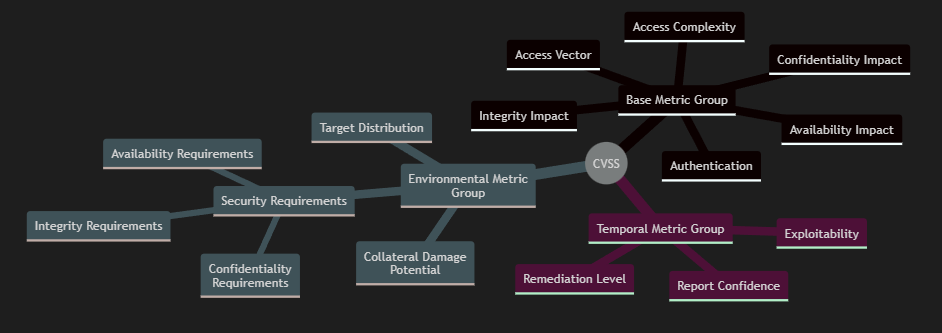

Security Metrics
This section is dedicated to material related to security metrics, for the relevance they have to a goal-oriented enterprise.
Reflection
In the previous module on object-oriented programming, I discovered a textbook by Fenton and Biemann on software metrics, that was pivotal by shifting my perspective of software metrics from a complete skepticism of them, to an appreciation of the value they provide to a project manager. I still am very critical against metrics that require human opinion or are treated as contextually immune, but making software metrics explicit, as instruments of decision making, provides more traction for coordination amongst a team. Therefore I made sure to explore security metrics in this module.
Recommended Reading
- Fenton, N & Bieman, J. (2015) '10.5 Security Measures', in: Fenton, N & Bieman, J. (2015) Software metrics: a rigorous and practical approach. 3rd ed. Boca Raton: CRC Press. 475-523. ISBN 9780367659028 - Fenton and Biemann include a section specifically about security metrics that are useful in a goal-based project framework.
Measuring Software Vulnerability
Attack Surface
"The set of points on the boundary of a system, a system element, or an environment where an attacker can try to enter, cause an effect on, or extract data from." ( NIST )
Common Vulnerability Scoring System (CVSS)
"The Common Vulnerability Scoring System (CVSS) provides a way to capture the principal characteristics of a vulnerability and produce a numerical score reflecting its severity." ( FIRST )
"CVSS is well suited as a standard measurement system for industries, organizations, and governments that need accurate and consistent vulnerability severity scores." ( NIST )
I've left out the specific details constituting each individual submetric of the CVSS, as they are well documented in the CVSS specification. CVSS requires alot of information to be gathered about a vulnerability, which is both it's weakness and strength.
Readings
- Manadhata, P. & Wing, J. (2011) An Attack Surface Metric. IEEE Transactions on Software Engineering. 37(3): 371-386. Manadhata and Wing present an attack surface metric based on an entry and exit point framework. The framework is formally modelled as an I/O automaton.
- Mell, P., Scarfone, K. & Romanosky, S. (2007) A Complete Guide to the Common Vulnerability Scoring System Version 2.0. Available from: here. Mell et al. present an outline for a security metric built from a suite of metrics, called the common vulnerability scoring system (CVSS).
Evaluating Security Products
Security Attribute Evaluation Model (SAEM)
Readings
- Butler, S. (2002) 'Security Attribute Evaluation Method: A Cost-Benefit Approach'. Proceedings of the 24th International Conference on Software Engineering. Orlando Florida, USA, 2002. IEEE. 2002. Butler compares a selection of security designs, by using the Security Attribute Evaluation Model (SAEM), consisiting of benefit assessment, threat index evaluation, coverage assessment and cost analysis.
Measuring Software Testability
Cyclomatic Complexity
"The amount of decision logic in a source code function" ( NIST )
Is Cyclomatic Complexity relevant in security research today?: Unquestionably, cyclomatic complexity provides a lower bound to the amount of tests that would be required to classify a programme as reliable, by virtue of branch coverage. Cyclomatic complexity might not give the exact amount of tests that would be required, but a lower bound is still extremely useful for estimation purposes. If there are less tests written for a programme than the cyclomatic complexity of a programme, than it is definitely not fully tested. Therefore there might be a security vulnerability. The simplicty of calculating cyclomatic complexity, and comparing it to the number of written tests, provides a cheap way to identify if there is an obvious lack of reliability in the programme, and a potential security vulnerability. I don't think there's any reason to not do that check.
Readings
- Ferrer, J., Chicano, F. & Alba, E. (2013) Estimating software testing complexity. Information and Software Technology. 55(12): 2125-2139. Ferrer et al present the Branch Coverage Expectation metric as a measure of how difficult it is for a computer to automatically generate test cases for code. They compare it to other complexity metrics such as Lines of Code, and Cyclomatic Complexity, as well as the reliability metric; Branch Coverage.
- NIST. (1996) Structured Testing: A Testing Methodology Using the Cyclomatic Complexity Metric. Available from here. NIST outline a structured testing methodology called Basis Path Testing based on the Cyclomatic Complexity.
- Shepperd, M. (1988) A Critque of Cyclomatic Complexity as a Software Metric. Software Engineering Journal. 3(2): 30-36. Shepperd argues that Cyclomatic Complexity is based on the decomposition of a system into suitable testable components, which it fails at, because the ease of testing each component is not taken into account. Shepperd also argues that more attention should be given to validating metrics, and that Lines of Code is a better metric.